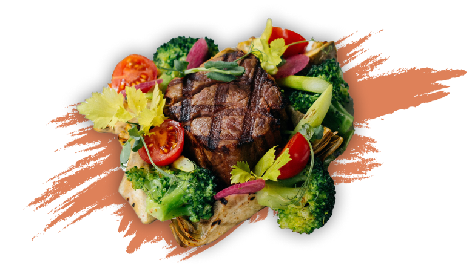

Delight in Every Bite
A true culinary masterpiece with a medallion and fresh vegetables — a perfect blend of elegance and natural flavors. Discover the ideal harmony of tastes that will capture your heart.

We created our establishment out of a love for authentic food that combines tradition with modern culinary ideas. Our dishes are more than just food; they are stories we tell through flavors, aromas, and emotions. We believe that each dish should not only be delicious but also provide a special experience that lingers in memory.
Our chefs select only the freshest ingredients to bring out the best in each component. We blend unique recipes from around the world and prepare them with care, crafting dishes that inspire. Our goal is to provide you with an unforgettable experience that sparks your appetite and leaves lasting memories.
Join us on this journey of flavors and enjoyment! We look forward to making your lunch or dinner a truly special moment.
Jaylon Kenter
Leo Lubin
Jocelyn Stanton
Marcus Geidt